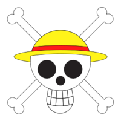
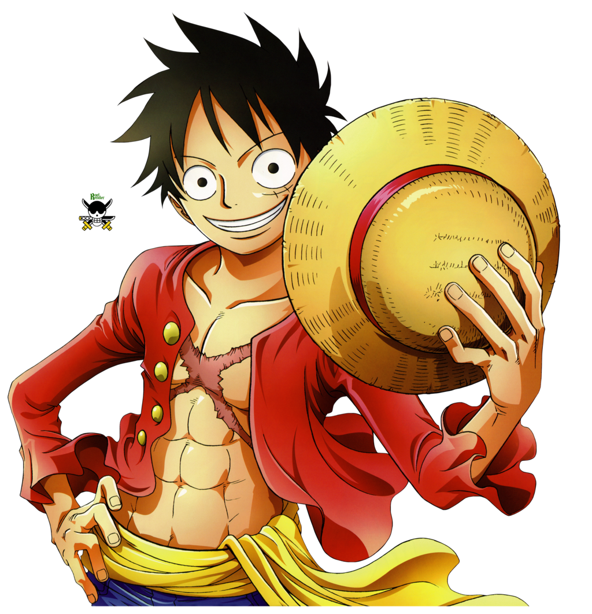

One Piece é um popular mangá e anime japonês criado por Eiichiro Oda. A história gira em torno de Monkey D. Luffy, um jovem cujo corpo ganha as propriedades da borracha após comer uma fruta mágica chamada Gomu Gomu no Mi. Determinado a se tornar o Rei dos Piratas, Luffy parte em uma jornada com sua tripulação, os Chapéus de Palha.
